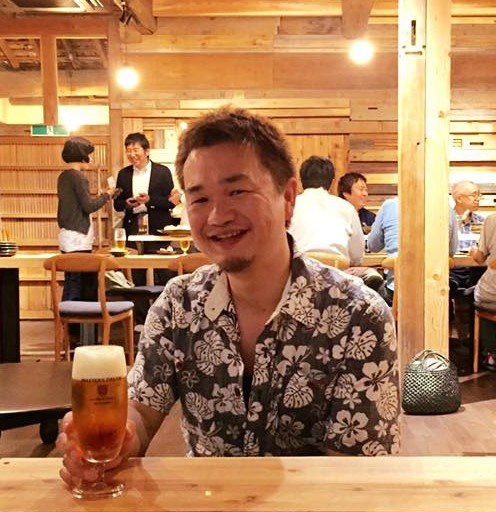

こんばんは、KMSの本橋です。
先週一週間は神領小学校でKMSの特別授業週間でした。なんでも最近は夏休みが一週間短いのだそうで、長期休暇から通常授業に移行する期間でショック・アブソーバー的に特別授業をご依頼いただきました。授業でもなく遊びでもなく最新技術に触れられるKMS特別授業はそんな気もそぞろな子供たちにうってつけです。
先週は４日間に渡り、KMSメンバーによる特別授業がこんな感じで続いていました。
- 8/29：５年生を対象に、3Dプリンタ×フリスビー（寺田くん）
- 8/30：４年生を対象に、ドローン実験室（本橋）
- 8/31：６年生を対象に、レーザーカッター（あべさん）
- 9/1：４年生を対象に、プログラミング教室（本橋）
このうち僕の担当はドローンとプログラミングです。
授業で使ったプログラミング教材について別ブログに開発経過をまとめています。そちらに授業の様子をまとめましたので今回はブログ記事のご紹介です。
授業の様子を明日のNHK徳島で取り上げていただけるということで急いで記事にしてみました（笑）
- NHK徳島放送局（四国エリアで放送されると聞いてます）
- 9/6 朝7:45～8:00 「おはよう徳島」内
リンク先のブログともども、テレビ放送のほうもぜひご覧ください。

化学 ドローン プログラミング
ドローンおじさんをやってたらプログラミング教材も作るようになりました。大人も子供もおねーさんも、プログラミングで遊べる世界を目指します。